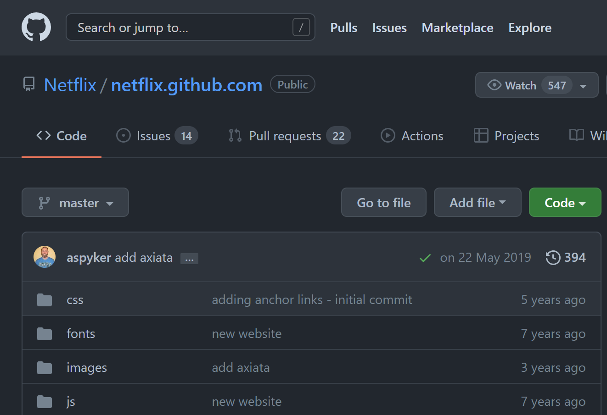
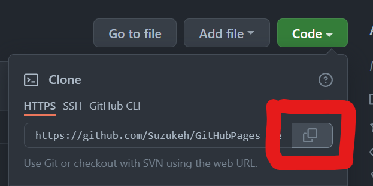

<!DOCTYPE html>
<html lang="en">
  <head>
    <meta charset="utf-8" />
    <meta name="viewport" content="width=device-width, initial-scale=1.0, maximum-scale=1.0, user-scalable=no" />

    <title>GitHubPages講習</title>
    <link rel="shortcut icon" href="./../favicon.ico" />
    <link rel="stylesheet" href="./../dist/reset.css" />
    <link rel="stylesheet" href="./../dist/reveal.css" />
    <link rel="stylesheet" href="./../_assets/theme/solarslide.css" id="theme" />
    <link rel="stylesheet" href="./../css/highlight/zenburn.css" />


  </head>
  <body>
    <div class="reveal">
      <div class="slides"><section  data-markdown><script type="text/template">

# 超初心者向け
## GitHub Pages講習
ｺﾜｸﾅｲﾖ!

</script></section><section  data-markdown><script type="text/template">

## 今日やること

自分のHPを作るぞ！！！

</script></section><section  data-markdown><script type="text/template">

## おしながき

* GitHubってなに？
* GitHub Pagesってなに？
* やってみよう<br>
(ハイパー作業タイム)


</script></section><section ><section data-markdown><script type="text/template">


本日の目的は「遊び方を知ってもらうこと」です。

遊ぶのに必要な部分以外は大幅にカットします。

一部**間違いレベルで雑**な説明にするときがあります。

</script></section><section data-markdown><script type="text/template">

録画はしないけど、この資料とGoogle先生で十分追えるはず。

ダメそうなら言ってください。

</script></section></section><section ><section data-markdown><script type="text/template">

## GitHubとは

</script></section><section data-markdown><script type="text/template">

クラウドストレージ


</script></section><section data-markdown><script type="text/template">


## Gitとは

ファイルを管理するソフトウェア

</script></section><section data-markdown><script type="text/template">

だいたいこういうこと


</script></section><section data-markdown><script type="text/template">

**これでOK**


* この世にはGitHubというクラウドストレージがある
* だいたいGoogle Driveみたいなもん

</script></section></section><section ><section data-markdown><script type="text/template">

## GitHub Pagesとは

</script></section><section data-markdown><script type="text/template">

[https://netflix.**github.io**/](https://netflix.github.io/)

</script></section><section data-markdown><script type="text/template">

GitHubを使ってWebページを公開できるサービス



https://github.com/Netflix/netflix.github.com

</script></section><section data-markdown><script type="text/template">

* Webページの内容はHTMLによって書かれている
* GitHubにはファイルを置くことができる

「GitHubに置いたHTMLからWebページ公開できたら楽だな～」

↑これが**GitHub Pages**

</script></section></section><section  data-markdown><script type="text/template">

## おさらい

* GitHubとは**クラウドストレージ** (Googleドライブ的なやつ) である
* アップロードしたHTMLファイルを**Webページとして公開**する機能がGitHub Pages
* 今からそれをやる

</script></section><section  data-markdown><script type="text/template">

## 実践編


1. GitHubのユーザー登録
1. ファイルの置き場を作る
1. HTMLのアップロード
1. ページの公開

<small>有識者へ：Gitの導入は時間余ったらやる予定</small>
</script></section><section  data-markdown><script type="text/template">

### GitHubのユーザー登録

これの通りに進める

最後は **[skip this for now]** でOK

[GitHubアカウントの作成方法 (2021年版)](https://qiita.com/ayatokura/items/9eabb7ae20752e6dc79d)


</script></section><section ><section data-markdown><script type="text/template">

### ファイルの置き場を作る

リポジトリ (フォルダの上位版的なやつ)を作る<br>


</script></section><section data-markdown><script type="text/template">

何でもいいので適当な名前をつける<br>
考えるのが嫌なら画像と同じでも大丈夫


</script></section><section data-markdown><script type="text/template">

ここにチェック


</script></section><section data-markdown><script type="text/template">

ここを押すと完了


</script></section></section><section ><section data-markdown><script type="text/template">

## HTMLのアップロード

サンプルのファイルを適当な場所にダウンロード<br>
まずはこのHTMLを公開する

[サンプル](https://github.com/Suzukeh/GitHubPages_kosyu/releases/download/1/index.html)


</script></section><section data-markdown><script type="text/template">

アップロード


</script></section><section data-markdown><script type="text/template">


</script></section><section data-markdown><script type="text/template">

**Commit changes**を押したらアップロード完了


</script></section><section data-markdown><script type="text/template">

`index.html`があるはず


</script></section></section><section ><section data-markdown><script type="text/template">

### ページの公開

設定を開く


</script></section><section data-markdown><script type="text/template">

Pagesに移動


</script></section><section data-markdown><script type="text/template">

mainを選択して、Saveを押すと完了


</script></section></section><section  data-markdown><script type="text/template">

## できた

クリックして公開されたページを見てみよう！


</script></section><section  data-markdown><script type="text/template">

## まとめ

* GitHubはGoogleドライブみたいなもの
* 簡単にHPが公開できる
* すごい

気になった人は色々いじってみてね

</script></section><section  data-markdown><script type="text/template">

**suzukeの作例**

[GitHub](https://github.com/Suzukeh)

* https://www.suzuke.dev/ ブログのような何か

* https://slide.suzuke.dev/ スライドを公開してるとこ

</script></section><section ><section data-markdown><script type="text/template">

時間余ったら

### Gitのインストール

**Windows / Mac**

[GitHub Desktop](https://desktop.github.com/)

**Linux (WSL)**
```bash:
sudo apt-get install git
```

</script></section><section data-markdown><script type="text/template">

### GitとGitHubの接続

SSH接続をすると、アカウントを紐付けられる

みんなsolでやったはずだしできるよね

https://qiita.com/shizuma/items/2b2f873a0034839e47ce

</script></section></section><section ><section data-markdown><script type="text/template">

### Gitコマンドの使い方 (今回の内容に使う分)

**GitHubからダウンロード** `clone`コマンド



```bash:
#git clone <GitHubで作ったリポジトリのURL>.git

git clone https://github.com/Suzukeh/GitHubPages_kosyu.git
```

</script></section><section data-markdown><script type="text/template">

**変更を登録 その1**

`add`コマンド

```bash:
#git add <変更を登録したいもの>

git add .
```

</script></section><section data-markdown><script type="text/template">

**変更を登録 その2**

`commit`コマンド

```bash:
#git commit -m <変更に関するコメント 日本語も可>

git commit -m "add index.html"
```

</script></section><section data-markdown><script type="text/template">

**変更をGitHubにアップロード**

`push`コマンド

```bash:
git push
```

</script></section><section data-markdown><script type="text/template">

**GitHubと同期**

`pull`コマンド

```bash:
git pull
```</script></section></section></div>
    </div>

    <script src="./../dist/reveal.js"></script>

    <script src="./../plugin/markdown/markdown.js"></script>
    <script src="./../plugin/highlight/highlight.js"></script>
    <script src="./../plugin/zoom/zoom.js"></script>
    <script src="./../plugin/notes/notes.js"></script>
    <script src="./../plugin/math/math.js"></script>
    <script>
      function extend() {
        var target = {};
        for (var i = 0; i < arguments.length; i++) {
          var source = arguments[i];
          for (var key in source) {
            if (source.hasOwnProperty(key)) {
              target[key] = source[key];
            }
          }
        }
        return target;
      }

      // default options to init reveal.js
      var defaultOptions = {
        controls: true,
        progress: true,
        history: true,
        center: true,
        transition: 'default', // none/fade/slide/convex/concave/zoom
        plugins: [
          RevealMarkdown,
          RevealHighlight,
          RevealZoom,
          RevealNotes,
          RevealMath
        ]
      };

      // options from URL query string
      var queryOptions = Reveal().getQueryHash() || {};

      var options = extend(defaultOptions, {"controls":true,"progress":true,"controlsTutorial":true,"slideNumber":true,"keyboard":true,"overview":true,"help":true,"pause":true,"mouseWheel":false,"pdfSeparateFragments":false,"helpButtonDisplay":"first","menu":{"side":"left","hideMissingTitles":true,"custom":[{"title":"About","icon":"<i class=\"fa fa-info\">","content":"<p><a href='https://suzukeh.github.io/myreveal/'>slides list</a></p><p><a href='https://github.com/Suzukeh/myreveal'>repository</a></p>"}]}}, queryOptions);
    </script>

    <script src="./../_assets/plugin/chalkboard/plugin.js"></script>
    <script src="./../_assets/plugin/toolbar/toolbar.js"></script>
    <script src="./../_assets/plugin/customcontrols/plugin.js"></script>
    <script src="./../_assets/plugin/helpbutton/helpbutton.js"></script>
    <script src="./../_assets/plugin/menu/menu.js"></script>
    <script src="./../_assets/plugin.js"></script>

    <script>
      Reveal.initialize(options);
    </script>
  </body>
</html>
